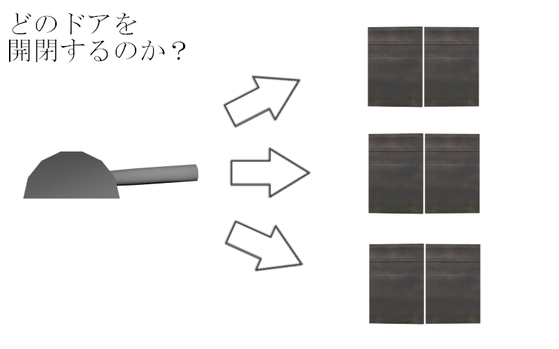

- EqualObjectName
- ForwardMatchName
- 番号設定
- auto(上級者向け)
- stringクラス(上級者向け)
- vectorクラス、listクラス(上級者向け)
2.1 Leverの配置
- //Game.cpp/Game::Start()
- //名前がenemyだったら。
- else if(objData.EqualObjectName(L"enemy") == true)
- {
- //エネミーのオブジェクトを作成する。
- Enemy* enemy = NewGO<Enemy>(0, "enemy");
- //座標を設定する。
- enemy->SetPosition(objData.position);
- //回転を設定する。
- enemy->SetRotation(objData.rotation);
- //HPを5に設定する。
- enemy->SetHP(5);
- //作成したエネミーの和を数えたいので、+1する。
- m_numEnemy++;
- return true;
- }
- //名前がbossだったら。
- else if(objData.EqualObjectName(L"boss") == true)
- {
- //ボスのオブジェクトを作成する。
- Boss* boss = NewGO<Boss>(0, "boss");
- //座標を設定する。
- boss->SetPosition(objData.position);
- //回転を設定する。
- boss->SetRotation(objData.rotation);
- //ボスのHPは高めに設定する。
- //HPを15に設定する。
- boss->SetHP(15);
- //作成したエネミーの和を数えたいので、+1する。
- m_numEnemy++;
- return true;
- }
- //名前がleverだったら。
- else if(objData.EqualObjectName(L"lever") == true)
- {
- //レバーのオブジェクトを作成する。
- auto lever = NewGO<Lever>(0,"lever");
- //座標を設定する。
- lever->SetPosition(objData.position);
- //大きさを設定する。
- lever->SetScale(objData.scale);
- //回転を設定する。
- lever->SetRotation(objData.rotation);
- //レバーの配列に作成したオブジェクトを加える。
- m_leverVector.push_back(lever);
- return true;
- }
- return true;
- });
2.2 Doorの配置
- //Game.cpp/Game::Start()
- //名前がleverだったら。
- else if(objData.EqualObjectName(L"lever") == true)
- {
- //レバーのオブジェクトを作成する。
- auto lever = NewGO<Lever>(0,"lever");
- //座標を設定する。
- lever->SetPosition(objData.position);
- //大きさを設定する。
- lever->SetScale(objData.scale);
- //回転を設定する。
- lever->SetRotation(objData.rotation);
- //レバーの配列に作成したオブジェクトを加える。
- m_leverVector.push_back(lever);
- return true;
- }
- //名前がdoorだったら。
- else if(objData.EqualObjectName(L"door") == true)
- {
- //ドアのオブジェクトを作成する。
- auto door = NewGO<Door>(0, "door");
- //座標を設定する。
- door->SetPosition(objData.position);
- //大きさを設定する。
- door->SetScale(objData.scale);
- //回転を設定する。
- door->SetRotation(objData.rotation);
- //ドアの配列に作成したオブジェクトを加える。
- m_doorVector.push_back(door);
- return true;
- }
- return true;
- });
2.3 LeverとDoorの紐づけ
- //Game.cpp/Game::Start()
- //名前がleverだったら。
- else if(objData.ForwardMatchName(L"lever") == true) //以下省略
- //名前がdoorだったら。
- else if(objData.ForwardMatchName(L"door") == true)
- //Game.cpp/Game::Start()
- //名前がleverだったら。
- else if(objData.ForwardMatchName(L"lever") == true)
- {
- //レバーのオブジェクトを作成する。
- auto lever = NewGO<Lever>(0,"lever");
- //座標を設定する。
- lever->SetPosition(objData.position);
- //大きさを設定する。
- lever->SetScale(objData.scale);
- //回転を設定する。
- lever->SetRotation(objData.rotation);
- //レバーの配列に作成したオブジェクトを加える。
- m_leverVector.push_back(lever);
- //レバーに番号を振る。
- lever->SetLeverNumber(objData.number);
- return true;
- }
- //名前がdoorだったら。
- else if(objData.ForwardMatchName(L"door") == true)
- {
- //ドアのオブジェクトを作成する。
- auto door = NewGO<Door>(0, "door");
- //座標を設定する。
- door->SetPosition(objData.position);
- //大きさを設定する。
- door->SetScale(objData.scale);
- //回転を設定する。
- door->SetRotation(objData.rotation);
- //ドアの配列に作成したオブジェクトを加える。
- m_doorVector.push_back(door);
- //ドアに番号を振る。
- door->SetLeverNumber(objData.number);
- return true;
- }
- return true;
- });
2.4 まとめ
- EqualObjectName関数は完全一致
- ForwardMatchName関数は部分一致
- k2Engineでは、3dsmaxで設定した名前の内、@より後ろの数値を取得できる。
2.5 Tips auto(上級者向け)
- //Lever型になる
- auto lever = new Lever();
- //autoを用いたループ、gameObjectListは配列
- for(auto gameObject : gameObjectList{
- if(gameObject.isDead())
- {
- delete gameObject;
- //....
- }
- }
2.6 Tips stringクラス(上級者向け)
- //初期化
- std::string text = "aiueo";
- //文字数を取得
- text.size();
- //文字列検索
- text.find("ai");
- //文字列連結
- text += "ka";
2.7 Tips vectorクラス、listクラス(上級者向け)
- std::list<Lever*> leverList;
- //末尾に要素を追加
- leverList.push_back(new Lever());
- //先頭に要素を追加
- leverList.push_front(new Lever());
- //要素数を取得
- leverList.size();
- //末尾の要素を削除
- leverList.pop_back();
この章で学ぶこと
第一章では、「Enemy」や「Boss」を配置しました。
第二章では、「Lever」や「Door」の配置を行うと共に、k2Engineのレベルの機能についてより深く学んで行きましょう。 では、「Lever」の配置をしていきましょう。Assets/level3D/のstage.maxを開き、「tkExporter」を起動してください。


第二章では、「Lever」や「Door」の配置を行うと共に、k2Engineのレベルの機能についてより深く学んで行きましょう。 では、「Lever」の配置をしていきましょう。Assets/level3D/のstage.maxを開き、「tkExporter」を起動してください。
「Lever」のモデルは、Assets/modelData/lever/lever.fbxです。
向きや大きさ、位置を調整して配置してみてください。
向きや大きさ、位置を調整して配置してみてください。
出来たら、level.tklファイルに保存してください。
続いて、Game.slnファイルからVisual Studioを立ち上げて、Game.cppに下記のコードを追加してください。
続いて、Game.slnファイルからVisual Studioを立ち上げて、Game.cppに下記のコードを追加してください。
出来たら、ゲームを実行してみてください。
以下のように、「Lever」が表示されているでしょうか。
以下のように、「Lever」が表示されているでしょうか。
続いて、「Door」の配置を行っていきます。
続いて、「Door」の配置を行っていきます。
「Door」のモデルは、Assets/modelData/doorのdoor.fbxです。
「Lever」が手前になるように配置してください。

「Door」のモデルは、Assets/modelData/doorのdoor.fbxです。
「Lever」が手前になるように配置してください。
出来たら、level.tklファイルに保存してGame.cppに下記のコードを追加してください。
出来たら、実行してみてください。
「Door」がキチンと表示されているでしょうか。
「Door」がキチンと表示されているでしょうか。
ここまで、「Lever」と「Door」の配置を行ってきました。
このまま、「Lever」を操作した際に、「Door」が開閉する処理を実装したい所ですが、1つ問題があります。 「Lever」を操作した際に、どの「Door」を開閉すればいいのかという問題です。
距離で判断するなど色々な方法がありますが、今回はtkExporterとk2Engineの機能を使用して、それぞれのオブジェクトに番号を振る方法で実装していきましょう。

このまま、「Lever」を操作した際に、「Door」が開閉する処理を実装したい所ですが、1つ問題があります。 「Lever」を操作した際に、どの「Door」を開閉すればいいのかという問題です。
距離で判断するなど色々な方法がありますが、今回はtkExporterとk2Engineの機能を使用して、それぞれのオブジェクトに番号を振る方法で実装していきましょう。

k2Engineでは、3dsmaxのオブジェクト名の内、「@より後ろの数値」を名前とは別に取得する機能があります。
この機能を利用しましょう。
では、対応する「Lever」と「Door」に「door@1」という風に番号を振ってみましょう。
では、対応する「Lever」と「Door」に「door@1」という風に番号を振ってみましょう。
番号を振ったら、level.tklファイルとstage.maxファイルの保存をしてください。
以上で、3dsmax側の操作は終了です。続いて、3dsmax側で設定した数値を読み込んでいきます。
では、ゲームを一度実行してみましょう。そうすると、「Door」と「Lever」が一切表示されないと思います。 これは何故でしょうか。
以上で、3dsmax側の操作は終了です。続いて、3dsmax側で設定した数値を読み込んでいきます。
では、ゲームを一度実行してみましょう。そうすると、「Door」と「Lever」が一切表示されないと思います。 これは何故でしょうか。
これは、「if(objData.EqualObjectName(L"lever") == true)」
という部分のプログラムに問題があります。
この、EqualObjectName()という関数ですが、引数に設定した名前と完全一致の場合のみ、trueを返します。
先ほど、「Door」や「Lever」の名前に@〇を付けました。なので、lever@1とleverを比較し、完全一致はしていないのでfalseが返り、if文の中の処理が実行されないということが起きてしまっています。
では、どうすればよいでしょうか。
この、EqualObjectName()という関数ですが、引数に設定した名前と完全一致の場合のみ、trueを返します。
先ほど、「Door」や「Lever」の名前に@〇を付けました。なので、lever@1とleverを比較し、完全一致はしていないのでfalseが返り、if文の中の処理が実行されないということが起きてしまっています。
では、どうすればよいでしょうか。
k2Engineでは、このような事態を避けるために、ForwardMatchName()という関数が存在します。
この関数は、引数に設定した名前と部分一致した場合、trueを返します。
これがどういうことかというと、オブジェクトの名前に引数で設定した名前が含まれてさえいれば、trueを返すということです。
この関数を使えば、例えば@が含まれていてもオブジェクトを配置することが出来ますね。
では、「EqualObjectName」の部分を「ForwardMatchName」に置き換えましょう。
この関数は、引数に設定した名前と部分一致した場合、trueを返します。
これがどういうことかというと、オブジェクトの名前に引数で設定した名前が含まれてさえいれば、trueを返すということです。
この関数を使えば、例えば@が含まれていてもオブジェクトを配置することが出来ますね。
では、「EqualObjectName」の部分を「ForwardMatchName」に置き換えましょう。
出来たら、実行してみましょう。「Lever」と「Door」が表示されているでしょうか。
では最後に、番号の振り分けをして、第二章を締めくくろうと思います。
Game.cppに下記のコードを追加してください。
では最後に、番号の振り分けをして、第二章を締めくくろうと思います。
Game.cppに下記のコードを追加してください。
以上で、第二章は終了となります。
次章からは、本格的にプログラムを書いていきます。
次章からは、本格的にプログラムを書いていきます。
上記のコードで、「auto lever = NewGO...」という部分がありました。
この「auto」とは、どういうものなのでしょうか。
これは、型推論と呼ばれるものです。変数に代入される値を元に、コンパイラが型を自動で決定してくれるものです。
変数の型が右辺の値によって明確である時や、型が重要でない時、型が一定ではない時は使用していくと良いでしょう。
詳しくは、こちらの記事を参照してください。
C++ autoの使いどころ・使わない方が良い場面
この「auto」とは、どういうものなのでしょうか。
これは、型推論と呼ばれるものです。変数に代入される値を元に、コンパイラが型を自動で決定してくれるものです。
変数の型が右辺の値によって明確である時や、型が重要でない時、型が一定ではない時は使用していくと良いでしょう。
詳しくは、こちらの記事を参照してください。
C++ autoの使いどころ・使わない方が良い場面
文字列の話が出たので、こちらを紹介しておきます。
C++では、文字は「char」で扱うと勉強しましたが、なかなか扱いづらいと思った学生も居たと思います。
そんな時は、C++標準ライブラリの「stringクラス」を使用しましょう。
char型では、文字列を扱う際に配列にしなければいけないなど面倒だと思います。しかしstringクラスでは、「string text="aiueo";」のように簡単に文字列を作成することができます。
また、stringクラスには、文字列を扱うための豊富な関数が用意されています(文字数、挿入、削除など)。
文字列を扱う時は、是非stringクラスを使用してみては如何でしょうか。k2Engineでも多用しています。
【C++】C++の文字列操作(std::stringクラス)について解説
C++では、文字は「char」で扱うと勉強しましたが、なかなか扱いづらいと思った学生も居たと思います。
そんな時は、C++標準ライブラリの「stringクラス」を使用しましょう。
char型では、文字列を扱う際に配列にしなければいけないなど面倒だと思います。しかしstringクラスでは、「string text="aiueo";」のように簡単に文字列を作成することができます。
また、stringクラスには、文字列を扱うための豊富な関数が用意されています(文字数、挿入、削除など)。
文字列を扱う時は、是非stringクラスを使用してみては如何でしょうか。k2Engineでも多用しています。
【C++】C++の文字列操作(std::stringクラス)について解説
上記のコードで、「m_doorVector.push_back(door);」という部分がありました。
これは配列に要素を追加しているコードなのですが、配列の長さは固定であると勉強したと思います。では何故、このようなことが可能なのでしょうか。
それは、可変長配列と呼ばれるものを使用しているからです。 この可変長配列では、配列の長さは固定ではなく要素の追加、削除が可能です。
C++では、標準ライブラリの「listクラス」と「vectorクラス」がこれに当たります(他にもあります)。ゲーム内で要素数が変化する配列を作成しなければいけない場合、この可変長配列を利用してみましょう。
C++のvectorまとめ
これは配列に要素を追加しているコードなのですが、配列の長さは固定であると勉強したと思います。では何故、このようなことが可能なのでしょうか。
それは、可変長配列と呼ばれるものを使用しているからです。 この可変長配列では、配列の長さは固定ではなく要素の追加、削除が可能です。
C++では、標準ライブラリの「listクラス」と「vectorクラス」がこれに当たります(他にもあります)。ゲーム内で要素数が変化する配列を作成しなければいけない場合、この可変長配列を利用してみましょう。
C++のvectorまとめ
この、「listクラス」と「vectorクラス」、似ているようで内部の処理は全然違うので、興味のある学生は調べてみてもいいかもしれませんね。
ざっくりいうと、配列のとある要素に対するアクセス速度はvectorクラス>listクラス、要素の追加・削除の速度はlistクラス>vectorクラスです。
配列の長さが短い、要素の追加・削除が頻繁に行われる→listクラス
配列の長さが長い、要素の追加・削除があまり行われない→vectorクラス
基本 その２『ListとVectorの違い』
ざっくりいうと、配列のとある要素に対するアクセス速度はvectorクラス>listクラス、要素の追加・削除の速度はlistクラス>vectorクラスです。
配列の長さが短い、要素の追加・削除が頻繁に行われる→listクラス
配列の長さが長い、要素の追加・削除があまり行われない→vectorクラス
基本 その２『ListとVectorの違い』